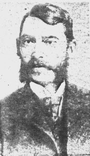
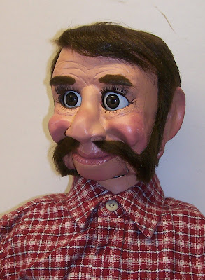

Abe Buzzard: Fowl play
3/8/2011
{kind=link}

Nearly a century ago, Abe Buzzard, and his brother Ike, were notorious Pennsylvania chicken thieves for more than 50 years. Periodic prison terms forced them to take breaks from their unusual chosen career, and Abe, while serving one sentence in 1913, claimed to have "seen the light" and was paroled. He stated his desire was to spend the rest of his life "converting other sinners". So weekdays he went from church to church throughout southeastern Pennsylvania giving inspiring talks. Each weekend, however, he returned home to the Welsh mountains where he was subsequently caught robbing a hen coop. In 1929 he drew 9-18 years for chicken theft. Death, however, released him from serving out that sentence.
Although Abe Buzzard is no longer among the living, inspiring talks from a puppet namesake will soon resume. Del Burkholder asked me to create a likeness of Abe Buzzard which he will use in seminars and lectures. Using the life examples of this loveable outlaw from the 19th and early 20th century, wrapped in humor, they will discuss obstacles that create falling away from the faith. The saga of Abe Buzzard takes yet another turn... (And the life of a maker of puppets is never dull. :-)
